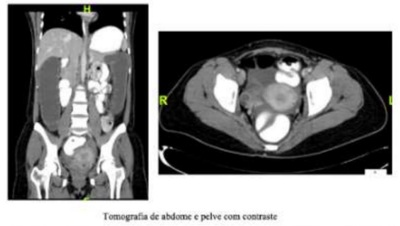
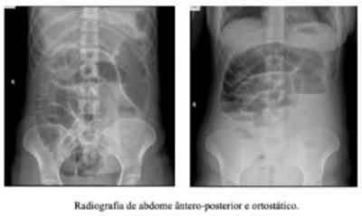
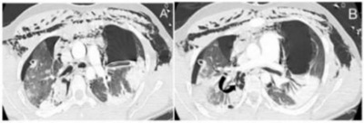
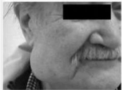
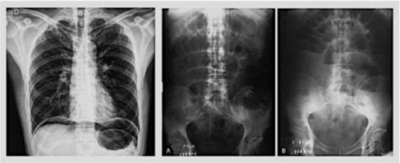
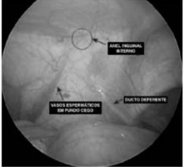

Questão 1 · Aconselhamento Genético · 4000186984A incorporação do sequenciamento de última geração têm aumentado a sensibilidade dos testes genéticos, possibilitando o diagnóstico precoce com perspectiva de intervenção. Sendo correto que:
A Consequentemente, a avaliação molecular passa a fazer parte da rotina de avaliação de pacientes com miocardiopatias não hereditárias.
B Consequentemente, a avaliação molecular não passa a fazer parte da rotina de avaliação de pacientes com miocardiopatias hereditárias, tais como: miocardiopatias hipertróficas, arritmogênica dilatada.
C Consequentemente, a avaliação molecular passa a fazer parte da rotina de avaliação de pacientes com miocardiopatias hereditárias, tais como: miocardiopatias hipertróficas, arritmogênica dilatada e/ou restritiva e miocárdio não compactado, em função do seu potencial de fornecer aconselhamento mais individualizado e preciso aos pacientes e familiares com estas doenças.
D Consequentemente, a avaliação molecular passa a fazer parte da rotina de avaliação de pacientes com miocardiopatias hereditárias, tais como: miocardiopatias hipertróficas, arritmogênica dilatada e/ou restritiva e miocárdio não compactado, em função de nunca fornecer aconselhamento mais individualizado e preciso aos pacientes e familiares com estas doenças.
Questão 2 · Hipertensão e condições associadas · 4000186983O manejo da Hipertensão Arterial - HA em pacientes sob tratamento dialítico é desafiador, sendo correto o item:
A Especialmente devido à sobrecarga de volume que reduz a variabilidade da PA, superestimando-a na pré-diálise e subestimando-a depois dela.
B Especialmente devido à sobrecarga de volume que aumenta a variabilidade da PA, superestimando-a na pré- diálise e subestimando-a depois dela.
C Especialmente devido à sobrecarga de volume que aumenta a variabilidade da PA, superestimando-a na pré- diálise e não a subestimando-a depois dela.
D Especialmente devido à redução de volume que aumenta a variabilidade da PA, superestimando-a na pré-diálise e subestimando-a depois dela.
Questão 3 · Complicações da DRC Doença Cardiovascular · 4000186982Além da hipervolemia, a rigidez arterial é causa importante de hipertensão sistólica em pacientes com Doença Renal Crônica DRC em estágio 5D. Sendo correto que:
A Esse fenótipo específico reflete a aceleração do processo arteriosclerótico e o envelhecimento vascular prematuro nesta população.
B Esse fenótipo inespecífico reflete a aceleração do processo arteriosclerótico e o envelhecimento vascular prematuro nesta população.
C Esse fenótipo específico reflete a redução do processo arteriosclerótico e o envelhecimento vascular prematuro nesta população.
D Esse fenótipo específico reflete a aceleração do processo arteriosclerótico e não o envelhecimento vascular prematuro nesta população.
Questão 4 · Patogenia o vírus da hepatite B HBV · 4000186981Os receptores de membrana usados pelo vírus HBV ainda não estão completamente elucidados. Porém, podemos indicar como correto que:
A Após o reconhecimento dos receptores, a partícula viral nunca é internalizada por endocitose, o envelope viral é removido e o capsídeo é liberado no citoplasma.
B Após o reconhecimento dos receptores, a partícula viral é internalizada por endocitose, o envelope viral não é removido e o capsídeo é liberado no citoplasma.
C Após o reconhecimento dos receptores, a partícula viral é internalizada por endocitose, o envelope viral é removido e o capsídeo é liberado fora do citoplasma.
D Após o reconhecimento dos receptores, a partícula viral é internalizada por endocitose, o envelope viral é removido e o capsídeo é liberado no citoplasma.
Questão 5 · Distúrbios com comprometimento da excreção da bilirrubina · 4000186979A Colestiramina:
A Deve ser utilizada uma hora antes ou três horas após a ingestão de outros medicamentos, para não aumentar a absorção deles.
B Deve ser utilizada uma hora antes ou três horas após a ingestão de outros medicamentos, para não diminuir a absorção deles.
C Nunca deve ser utilizada uma hora antes a ingestão de outros medicamentos, para não diminuir a absorção deles.
D Deve ser utilizada uma hora antes ou três horas após a ingestão de outros medicamentos, para diminuir a absorção deles.
Questão 6 · Choque cardiogênico · 4000186978O estágio E do choque cardiogênico caracteriza casos extremos, no qual ocorre quadro clínico muito grave e com instabilidade:
A No qual os pacientes se apresentam hemodinamicamente instáveis e frequentemente em colapso circulatório.
B No qual os pacientes se apresentam hemodinamicamente instáveis e nunca em colapso circulatório.
C No qual os pacientes se apresentam hemodinamicamente instáveis e frequentemente em colapso circulatório.
D No qual os pacientes não se apresentam hemodinamicamente instáveis e frequentemente em colapso circulatório.
Questão 7 · Drogas Modif icadoras de Doença · 4000186977De maneira geral, os medicamentos modificadores do curso da doença (MMCD) biológicos da Artrite Reumatoide:
A Reduzem a inflamação articular, o dano estrutural e a incapacidade funcional e melhoram a qualidade de vida e, possivelmente e a fadiga.
B Não reduzem a inflamação articular, o dano estrutural e a incapacidade funcional e melhoram a qualidade de vida e, possivelmente e a fadiga.
C Reduzem a inflamação articular, o dano estrutural e a incapacidade funcional e não melhoram a qualidade de vida e, possivelmente e a fadiga.
D Reduzem a inflamação articular, mas não o dano estrutural e a incapacidade funcional e melhoram a qualidade de vida e, possivelmente e a fadiga.
Questão 8 · Introdução · 4000186976O HAV é formado por um capsídeo de formato icosaedrico composto pelas proteínas estruturais VP1, VP2 e VP3, o qual envolve o genoma viral. Podemos determinar como correto que:
A O genoma do HAV é constituído por uma molécula de RNA de fita simples, com polaridade positiva, que não funciona como RNA mensageiro, com aproximadamente 7,5 kilobases.
B O genoma do HAV é constituído por umaujhhi molécula de RNA de fita quadrupla, com polaridade positiva, que também funciona como RNA mensageiro, com aproximadamente 7,5 kilobases.
C O genoma do HAV é constituído por uma molécula de RNA de fita triplas, com polaridade negativa, que também funciona como RNA mensageiro, com aproximadamente 7,5 kilobases.
D O genoma do HAV é constituído por uma molécula de RNA de fita simples, com polaridade positiva, que também funciona como RNA mensageiro, com aproximadamente 7,5 kilobases.
Questão 9 · Tratamento f armacológico da insuf iciência cardíaca com f ração de ejeção reduzida · 4000186974O fármaco Omecamtiv mercabil melhora a contratilidade
A Melhorando a fração de ejeção, mas não o volume ejetado e o débito cardíaco, além de outros parâmetros que indicam melhora da função cardíaca. Os estudos mostraram que promove redução dos níveis de NT-pro BNP
B Melhorando a fração de ejeção, o volume ejetado e o débito cardíaco, além de outros parâmetros que indicam piora da função cardíaca. Os estudos mostraram que promove redução dos níveis de NT-pro BNP.
C Melhorando a fração de ejeção, o volume ejetado e o débito cardíaco, além de outros parâmetros que indicam melhora da função cardíaca. Os estudos mostraram que promove redução dos níveis de NT-pro BNP.
D Melhorando a fração de ejeção, o volume ejetado e o débito cardíaco, além de outros parâmetros que indicam melhora da função cardíaca. Os estudos mostraram que promove aumento dos níveis de NT-pro BNP
Questão 10 · Manif estações clínicas · Diagnóstico · 4000186973A hepatite B pode se apresentar de forma aguda ou crônica nos indivíduos infectados. Sendo correto que:
A As hepatites agudas benignas costumam ser identificadas pela redução dos níveis séricos das aminotransferases, o que leva o indivíduo a apresentar sintomas de uma infecção viral inespecífica, com leves alterações gastrintestinais.
B As hepatites agudas benignas costumam ser identificadas pelo aumento dos níveis séricos das aminotransferases, o que leva o indivíduo a apresentar sintomas de uma infecção viral específica, com leves alterações gastrintestinais.
C As hepatites agudas benignas costumam ser identificadas pelo aumento dos níveis séricos das aminotransferases, o que leva o indivíduo a nunca apresentar sintomas de uma infecção viral inespecífica, com leves alterações gastrintestinais.
D As hepatites agudas benignas costumam ser identificadas pelo aumento dos níveis séricos das aminotransferases, o que leva o indivíduo a apresentar sintomas de uma infecção viral inespecífica, com leves alterações gastrintestinais.
Questão 11 · Apresentação Clínica · 4000186971Alguns recém-nascidos podem apresentar íleo meconial. Considerando esse diagnóstico, assinale a alternativa que não apresenta uma complicação do mesmo:
A Má rotação.
B Peritonite.
C Perfuração.
D Volvo.
Questão 12 · Quimioterapia · 4000186970obre a cardiotoxicidade no tratamento oncológico assinale a alternativa incorreta.
A A cardiotoxicidade é a segunda causa mais frequente de complicação do tratamento oncológico, perdendo para a neutropenia.
B A prevalência de cardiotoxicidade é maior em indivíduos menores de 5 anos de idade, do sexo masculino e caucasianos.
C Os agentes quimioterápicos ou a radioterapia podem determinar alterações estruturais, elétricas e funcionais no miocárdio.
D A perda de células musculares cardíacas prejudica o crescimento do coração, com consequente massa ventricular esquerda inadequada.
Questão 13 · Mielomeningocele e def eitos de f echamento posterior do tubo neural · 4000186969Assinale a alternativa que apresente um exemplo de doença diagnosticada previamente com elevada morbidade e ameaçadora de sobrevida a longo prazo, mas para a qual se oferecem intervenções terapêuticas capazes de aliviar um sintoma e melhorar a qualidade de vida por algum tempo.
A Síndrome do coração esquerdo hipoplásico.
B Anencefalia.
C Mielomeningocele extensa.
D Displasia esquelética.
Questão 14 · Lesão renal aguda na criança · 4000186967Com relação aos fatores de risco para Insuficiência Renal Aguda Neonatal, assinale a alternativa incorreta.
A Prematuridade.
B Asfixia perinatal.
C Cardiopatias congênitas.
D Sobrepeso ao nascer.
Questão 15 · Quadro clínico da anemia f alcif orme · Tratamento da anemia f alcif orme · 4000186966Das alternativas apresentadas abaixo, assinale aquela que apresenta a conduta mais adequada para um lactente de 7 meses com antecedente de triagem neonatal positiva para doença falciforme e que apresenta, há 1 dia, edema e eritema de ambas as mãos, acompanhados de irritabilidade e choro inconsolável.
A Iniciar uso de anti-inflamatório não hormonal intramuscular associado a paracetamol de horário para controle da dor.
B Iniciar uso de morfina, em dose baixa, de horário, observando os sinais vitais e se está havendo controle da dor.
C Colher hemograma, hemocultura e iniciar uso de analgésicos comuns para controle álgico.
D Iniciar associação entre codeína e paracetamol de horário em razão do efeito sinérgico e do menor risco de depressão respiratória.
Questão 16 · Etiologia · 4000186965Das alternativas apresentadas abaixo, qual não é uma condição em que encontra-se polidrâminio com frequência?
A Doença de Hirschprung.
B Atresia duodenal.
C Atresia pilórica.
D Atresia de esôfago tipo A de Gross.
Questão 17 · Acidentes Vasculares Cerebrais AVC · 4000186962Uma criança de 6 anos, internada na UTI Pediátrica após sofrer um AVC, apresenta FC de 130bpm, FR de 36irpm, PAS de 138mmHg, PAD de 82mmHg, temperatura de 38,4°C, diaforese localizada e opistótono (escore 16 na classificação de HSP). Com base nesses dados, o diagnóstico de hiperatividade simpática paroxística é:
A Improvável.
B Provável.
C Confirmado.
D Possível.
Questão 18 · Crescimento · 4000186960Considerando o crescimento infantil, assinale a alternativa correta.
A A avaliação, e o acompanhamento do crescimento, apesar de requerer ferramentas simples, é tarefa complexa, e o pediatra é o profissional mais capacitado para esse seguimento.
B O crescimento normal é a progressão das mudanças na estatura e peso compatível com os padrões estabelecidos para uma determinada população.
C Em relação ao programa genético, pesquisas mostram que genes só se tornam ativos depois do primeiro ano de vida.
D As competências pediátricas em puericultura não se relacionam com o crescimento infantil.
Questão 19 · Pneumonia hospitalar PH · 4000186959Assinale a alternativa correta em relação à definição de Pneumonia Hospitalar.
A É a presença de derrame pleural mostrado na radiografia de tórax.
B É a presença de múltiplas cavitações preenchidas por gás dentro da consolidação pulmonar visualizadas em radiografia de tórax.
C Pneumonia adquirida após 48 horas de hospitalização.
D É a presença de liquefação do tecido pulmonar mostrado na tomografia de tórax.
Questão 20 · Dispositivos de f ornecimento de oxigênio · 4000186957O cateter nasal de alto uxo tem sido cada vez mais utilizado nas unidades de emergência e de terapia intensiva pediátricas evitando, em muitos casos, a ventilação mecânica invasiva. Assinale a alternativa que apresenta uma das principais situações de doenças que a ventilação com cateter nasal de alto fluxo pode auxiliar.
A Com retenção da pressão parcial de CO2 (PCO2), como pneumonia intersticial.
B Com diminuição da complacência, como síndrome da angústia respiratória aguda.
C Neuromusculares, como atrofia espinhal.
D Respiratórias hipoxêmicas, como bronquiolite.
Questão 21 · Exames de Imagem · 4000186956Dos testes de imagem, o que apresenta maior acurácia em uma diverticulite aguda não complicada é:
A Radiografia de abdome agudo.
B Tomografia computadorizada.
C Enema opaco.
D Colonoscopia.
Questão 22 · Diagnóstico · Manif estações Clínicas e Exame Físico · Exames de Imagem · 4000186955Paciente feminina de 62 anos queixando-se de dor abdominal difusa há 4 dias, em cólicas, associada a distensão abdominal e vômitos fétidos e escuros. Relata que há 4 meses vem apresentando alguns episódios esporádicos de sangramento nas fezes, bem como redução da frequência evacuatória. Nega febre. Nega trauma. Nega cirurgias prévias. Ao exame físico: regular estado geral, descorada, desidratada, anictérica, afebril. Semiologia cardíaca e pulmonar normais. Abdome distendido, com ruídos, doloroso a palpação difusa, sem sinais de irritação peritoneal. Toque retal nota-se lesão ulcerada circunferencial distando 5 centímetros da borda anal. Foras realizadas as radiogra as e a tomogra a de abdome e pelve abaixo: Assinale a alternativa que corresponde ao diagnóstico sindrômico:


A Abdome agudo obstrutivo.
B Abdome agudo inflamatório.
C Abdome agudo vascular.
D Abdome agudo perfurativo.
Questão 23 · Tratamento Conservador x Tratamento Cirúrgico · 4000186953Paciente feminina de 62 anos queixando-se de dor abdominal difusa há 4 dias, em cólicas, associada a distensão abdominal e vômitos fétidos e escuros. Relata que há 4 meses vem apresentando alguns episódios esporádicos de sangramento nas fezes, bem como redução da frequência evacuatória. Nega febre. Nega trauma. Nega cirurgias prévias. Ao exame físico: regular estado geral, descorada, desidratada, anictérica, afebril. Semiologia cardíaca e pulmonar normais. Abdome distendido, com ruídos, doloroso a palpação difusa, sem sinais de irritação peritoneal. Toque retal nota-se lesão ulcerada circunferencial distando 5 centímetros da borda anal. Foras realizadas as radiogra as e a tomogra a de abdome e pelve abaixo: A conduta mais adequada para este caso é:


A Proctocolectomia total.
B Radioterapia exclusiva.
C Colostomia descompressiva.
D Amputação abdominoperineal.
Questão 24 · Pneumotórax Aberto · 4000186951Paciente masculino é transferido de outra cidade para avaliação da equipe de cirurgia do trauma e cirurgia torácica devido à queda de andaime de aproximadamente 15 metros de altura há 2 dias. Foi atendido na cidade de origem e realizada drenagem de tórax bilateral, porém o paciente não apresentou melhora com a terapêutica proposta e os ambos os drenos continuaram com grande débito aéreo no selo d'água. É admitido em sala do trauma com as seguintes condições: A - Via aérea pérvia, sem colar cervical. B - Equimoses torácicas, expansibilidade assimétrica e restrita, dor a palpação difusa com crepitações subcutâneas e murmúrio reduzido bilateralmente. Dreno de tórax a direita oscilando, com débito aéreo, dreno a esquerda não oscilante, sem débito. Saturação periférica de oxigênio: 90% em máscara com uxo de 5 l/min. C - Estável hemodinamicamente. Bem perfundido, sem sinais de choque. D - Glasgow 15, pupilas isocóricas, sem dé cits focais. E - Sem outras lesões ameaçadoras à vida aparentes: É submetido à tomogra a de tórax abaixo. Assinale a alternativa que melhor descreve os achados tomográficos.

A Pneumotórax a direita apenas, ausência de enfisema subcutâneo, contusão pulmonar bilateral.
B Pneumotórax bilateral persistente, grande enfisema subcutâneo e pneumomediastino.
C Pneumotórax bilateral, drenos torácicos, ausência de enfisema subcutâneo, ausência de pneumomediastino.
D Ausência de pneumotórax, grandes contusões pulmonares bilaterais, grande enfisema subcutâneo, pneumomediastino.
Questão 25 · Lesão da Árvore Traqueobrônquica · 4000186950Paciente masculino é transferido de outra cidade para avaliação da equipe de cirurgia do trauma e cirurgia torácica devido à queda de andaime de aproximadamente 15 metros de altura há 2 dias. Foi atendido na cidade de origem e realizada drenagem de tórax bilateral, porém o paciente não apresentou melhora com a terapêutica proposta e os ambos os drenos continuaram com grande débito aéreo no selo d'água. É admitido em sala do trauma com as seguintes condições: A - Via aérea pérvia, sem colar cervical. B - Equimoses torácicas, expansibilidade assimétrica e restrita, dor a palpação difusa com crepitações subcutâneas e murmúrio reduzido bilateralmente. Dreno de tórax a direita oscilando, com débito aéreo, dreno a esquerda não oscilante, sem débito. Saturação periférica de oxigênio: 90% em máscara com uxo de 5 l/min. C - Estável hemodinamicamente. Bem perfundido, sem sinais de choque. D - Glasgow 15, pupilas isocóricas, sem dé cits focais. E - Sem outras lesões ameaçadoras à vida aparentes: É submetido à tomogra a de tórax abaixo. Assinale a alternativa com a provável lesão traumática que justifique tais achados:

A Tamponamento cardíaco.
B Ruptura traumática de aorta.
C Contusão pulmonar.
D Lesão de árvore traqueobrônquica.
Questão 26 · Linf oma cutâneo primário de células T pleomórf icaas CD4 positivas pequenas e médias · 4000186949Homem de 50 anos procura atendimento ambulatorial devido aparecimento de nódulo em região de mandíbula direita de início há aproximadamente 7 meses, de crescimento lento. Nega febre. Nega perda ponderal. Nega sudorese. Nega trauma. Nega etilismo e tabagismo. Nega dor local. Ao exame: nódulo palpável na topogra a da glândula parótida direita, indolor, broelástico, não aderido a planos profundos. Palpação da tireoide normal. Sem achados à inspeção da cavidade oral. A principal hipótese diagnóstica é:

A Carcinoma basocelular.
B Carcinoma mucoepidermóide.
C Adenoma pleomórfico.
D Linfoma.
Questão 27 · Diagnóstico · 4000186948Paciente masculino, 30 anos, encaminhado a unidade de pronto atendimento de nível secundário devido a hipótese de abdome agudo obstrutivo por bridas. Queixa-se de dor abdominal súbita há 8 horas, intensa, em facada, em andar superior do abdome, associada a um episódio de vômito, com piora progressiva durante a observação, sem melhora com analgésicos. Nega trauma recente. Tem histórico de laparotomia prévia por ferimento de arma de fogo. Ao exame físico: regular estado geral, desidratado, taquicárdico, afebril. Semiologia cardiopulmonar normal. Abdome distendido, doloroso difusamente, tenso, com defesa involuntária à palpação. São realizadas as radiogra as de abdome agudo abaixo: A principal hipótese diagnóstica é:

A Pancreatite.
B Apendicite.
C Ureterolitíase.
D Úlcera péptica perfurada.
Questão 28 · Tratamento · 4000186947Paciente masculino, 30 anos, encaminhado a unidade de pronto atendimento de nível secundário devido a hipótese de abdome agudo obstrutivo por bridas. Queixa-se de dor abdominal súbita há 8 horas, intensa, em facada, em andar superior do abdome, associada a um episódio de vômito, com piora progressiva durante a observação, sem melhora com analgésicos. Nega trauma recente. Tem histórico de laparotomia prévia por ferimento de arma de fogo. Ao exame físico: regular estado geral, desidratado, taquicárdico, afebril. Semiologia cardiopulmonar normal. Abdome distendido, doloroso difusamente, tenso, com defesa involuntária à palpação. São realizadas as radiogra as de abdome agudo abaixo: A melhora conduta para este caso é:

A Dieta zero, hidratação, analgesia, antibioticoterapia e tratamento não operatório.
B Laparotomia exploradora.
C Dieta zero, sonda gástrica em drenagem, hidratação, antibioticoterapia e reavaliação do tratamento clínico em 24-48h.
D Endoscopia digestiva alta.
Questão 29 · Diagnóstico · 4000186944Menino, 11 meses, é encaminhado ao cirurgião pediátrico devido a distopia testicular esquerda. Mãe relata que desde o nascimento nunca apresentou testículo esquerdo tópico em bolsa testicular, porém foi orientada a aguardar até o primeiro ano de vida para resolução do quadro. Nascido a termo, sem intercorrências na gestação ou parto. Ao exame físico: abdome ácido, indolor, sem massas palpáveis. Fimose siológica. Testículo direito tópico em escroto. Bolsa testicular esquerda vazia, hipotró ca. Testículo esquerdo não palpável na região inguinal, raiz da coxa nem na base do pênis. Foi submetido a videolaparoscopia diagnóstica em que não foi encontrado testículo dentro da cavidade abdominal, porém notou-se as estruturas descritas (figura abaixo). A provável hipótese diagnóstica é:

A Vanishing testis.
B Testículo retrátil.
C Testículo deslizante.
D Nubbin testis.
Revisar: possível letra faltando em enunciado
Questão 30 · Neoplasia Cística Mucinosa · 4000186942Paciente feminina, 49 anos, em acompanhamento de lesão cística mucinosa assintomática de cauda de pâncreas descoberta há 3 anos em ultrassonogra a de rotina. Na última ressonância magnética apresentou crescimento da lesão, medindo atualmente 6 centímetros (medida prévia há 6 meses de 2 centímetros). A conduta preconizada neste caso é:
A Pancreatectomia total.
B Nova ressonância em 6 meses.
C Pancreatectomia caudal.
D Colangiopancreatografia endoscópica.
Questão 31 · Fatores de risco · 4000186940A situação que representa maior risco para câncer de colo uterino é:
A Tabagismo.
B Primiparidade precoce.
C Uso prolongado de contraceptivo oral.
D Infecção pelo HPV.
Questão 32 · Diagnóstico · 4000186939Em uma consulta pré-natal de rotina, o obstetra nota aumento de 1 cm na altura uterina entre as consultas mensais. O diagnóstico mais provável nesse caso é:
A Diabete Gestacional.
B Atresia de Esôfago Fetal.
C Restrição de Crescimento Fetal.
D Isoimunização Rh.
Questão 33 · Tratamento · 4000186937A droga considerada como pilar no tratamento da doença inflamatória pélvica na forma ambulatorial é:
A Doxiciclina.
B Cefalexina.
C Metronidazol.
D Cloranfenicol.
Questão 34 · Fisiopatologia · 4000186930Eventualmente, um quadro de vulvovaginite pode ser causado por proliferação desordenada de lactobacilos. Isso leva o nome de:
A Candidíase.
B Vaginose bacteriana.
C Doença inflamatória pélvica.
D Vaginose citolítica.
Questão 35 · Bacia obstétrica trajeto duro · 4000186928O menor diâmetro anteroposterior da bacia e, portanto, o que representa a conjugata vera obstetrícia, vai do bordo:
A superior da sínfise púbica até o promontório.
B posterior da sínfise púbica até o promontório.
C inferior da sínfise púbica até o promontório.
D inferior da sínfise púbica até o cóccix.
Questão 36 · Ducto venoso DV · 4000186927No ultrassom para pesquisa de trissomias na gestação, o doppler serve para investigar:
A Artéria umbilical.
B Artéria uterina.
C Ducto venoso.
D Artéria cerebral média.
Questão 37 · Fases do ciclo menstrual · 4000186926Uma mulher de 35 anos que não utiliza contraceptivos, na segunda fase do ciclo menstrual tem o endométrio do tipo:
A proliferativo.
B secretório.
C hiperplásico.
D atrófico.
Questão 38 · Conduta · 4000186925Uma gestante de 32 semanas, apresenta ultrassom sugerindo restrição de crescimento fetal assimétrico, líquido amniótico de volume normal e perfil hemodinâmico fetal (PHF) <1. Isso significa:
A o feto está bem oxigenado até o momento, e a conduta é expectante.
B existe hipoxemia fetal e a conduta é resolutiva no momento.
C existe hipoxemia fetal, mas a conduta é expectante, no momento, com repetição do doppler em 30 dias.
D não existe sofrimento fetal e a interrupção pode ser com 37 semanas, sem necessidade de nova avaliação com doppler.
Questão 39 · Métodos hormonais combinados · Contraindicações · Contraindicações · 4000186923Considere as assertivas; I. Anticoncepcionais combinados orais aumentam o risco de câncer de ovário. II. Tabagistas com mais de 35 anos podem utilizar anticoncepcionais combinados orais. III. Pacientes tabagistas podem utilizar anticoncepção com desogestrel após 35 anos de idade. Está correto o que se afirma em:
A I, apenas.
B II e III, apenas.
C I e II, apenas.
D III, apenas.
Questão 40 · Bacia obstétrica trajeto duro · 4000186921Em relação à anatomia da bacia obstétrica, assinale a alternativa correta
A Estreito médio: vai do bordo inferior da sínfise púbica ao promontório.
B Estreito superior: vai do bordo superior da sínfise púbica ao promontório.
C Estreito inferior: entre borda superior da sínfise púbica e espinhas ciáticas.
D Conjugata diagonais: borda superior da sínfise púbica ao promontório.
Questão 41 · Assistência ao puerpério f isiológico · 4000186919A variação de duração do puerpério está relacionada especialmente às mudanças anatômicas e siológicas no organismo da mulher, embora questões de ordem psicossocial:
A relacionadas à maternidade, à sexualidade, à autoestima, à reorganização da vida pessoal e familiar estejam ocorrendo concomitantemente e influenciem a passagem desse período.
B não relacionadas à maternidade, à sexualidade, à autoestima, à reorganização da vida pessoal e familiar estejam ocorrendo concomitantemente e influenciem a passagem desse período.
C relacionadas à maternidade, à sexualidade, à autoestima, à reorganização da vida pessoal e não familiar estejam ocorrendo concomitantemente e influenciem a passagem desse período.
D relacionadas à maternidade, à sexualidade, à autoestima, à reorganização da vida pessoal e familiar estejam ocorrendo concomitantemente e não influenciem a passagem desse período.
Questão 42 · Metabolismo lipídico · Avaliação laboratorial do perf il lipídico · 4000186918Nos idosos, dislipidemias são diagnosticadas frequentemente, principalmente em mulheres, pois:
A Os níveis de LDL-c tendem a reduzir com o avançar da idade, principalmente após a menopausa, enquanto, nos homens, os níveis de LDL-c tendem a diminuir após 55 anos de idade.
B Os níveis de LDL-c tendem a subir com o avançar da idade, principalmente após a menopausa, enquanto, nos homens, os níveis de LDL-c tendem a diminuir após 65 anos de idade.
C Os níveis de LDL-c não tendem a subir com o avançar da idade, principalmente após a menopausa, enquanto, nos homens, os níveis de LDL-c tendem a diminuir após 55 anos de idade.
D Os níveis de LDL-c tendem a subir com o avançar da idade, principalmente após a menopausa, enquanto, nos homens, os níveis de LDL-c tendem a diminuir após 55 anos de idade.
Questão 43 · Metas de controle glicêmico · 4000186916Todos os sistemas de monitoração glicêmica dependem da e ciência do instrumento de medida e das habilidades de seus usuários. Sendo correto que:
A É desnecessária a orientação quanto ao uso de tais ferramentas por profissionais de saúde devidamente treinados para tanto, assim como a averiguação frequente da sua utilização ao longo de toda a gravidez.
B É necessária a orientação quanto ao uso de tais ferramentas por profissionais de saúde indevidamente treinados para tanto, assim como a averiguação frequente da sua utilização ao longo de toda a gravidez.
C É necessária a orientação quanto ao uso de tais ferramentas por profissionais de saúde devidamente treinados para tanto, assim como a averiguação frequente da sua utilização ao longo
D É desnecessária a orientação quanto ao uso de tais ferramentas por profissionais de saúde devidamente treinados para tanto, assim como a averiguação frequente da sua utilização ao longo de toda a gravidez.
Questão 44 · Metabolismo lipídico · Fisiologia do Envelhecimento · 4000186914Com o envelhecimento ocorre mudança na composição corporal, como:
A redução da gordura visceral e diminuição da massa muscular.
B aumento da gordura visceral e nunca diminuição da massa muscular.
C aumento da gordura visceral e diminuição da massa adiposa.
D aumento da gordura visceral e diminuição da massa muscular.
Questão 45 · Tenof ovir · Esquemas de tratamento · 4000186913Em pacientes com HBsAg, antes do início dos antivirais de ação direta DAA, é importante dar preferência para a terapia antirretroviral (TARV) que:
A não contenha medicação ativa contra o vírus da hepatite B (lamivudina e tenofovir), a fim de evitar a reativação da hepatite B devido ao tratamento da hepatite C.
B contenha medicação ativa contra o vírus da hepatite B (lamivudina e tenofovir), a fim de evitar a reativação da hepatite B devido ao tratamento da hepatite C.
C contenha medicação ativa contra o vírus da hepatite B (lamivudina e tenofovir), a fim de promover a reativação da hepatite B devida ao tratamento da hepatite C.
D contenha medicação ativa contra o vírus da hepatite B (lamivudina e tenofovir), a fim de evitar a inativação da hepatite B devida ao tratamento da hepatite C.
Questão 46 · Estratif icação de risco cardiovascular · 4000186912Abordagem das dislipidemias e estratif icação de risco cardiovascular O aumento do risco de mortalidade total por Doença Cardiovascular foi associado ao maior consumo de carnes vermelhas e processadas, mas não ao consumo isolado de carnes não processadas em duas metanálises. Sendo correto que:
A Carnes processadas são também pobres em sódio e compostos nitrogenados, como nitratos, que podem contribuir para seu efeito deletério no risco Cardiovascular (CV), em razão de seus efeitos em pressão arterial e função endotelial.
B Carnes processadas são também ricas em sódio e não compostos nitrogenados, como nitratos, que podem contribuir para seu efeito deletério no risco Cardiovascular (CV), em razão de seus efeitos em pressão arterial e função endotelial.
C Carnes processadas são também ricas em sódio e compostos nitrogenados, como nitratos, que podem contribuir para seu efeito deletério no risco Cardiovascular (CV), em razão de seus efeitos em pressão arterial e função endotelial.
D Carnes processadas são também ricas em sódio e compostos nitrogenados, como nitratos, que podem contribuir para seu efeito deletério no risco Cardiovascular (CV), em razão de seus efeitos em pressão arterial e nunca da função endotelial.
Questão 47 · Heranças Multif atoriais · 4000186910Existem ainda efeitos genéticos que ocorrem intraútero e que podem persistir por gerações. Sendo correto que:
A 2Algumas influências sobre a obesidade podem ocorrer no útero ou até mesmo duas gerações passadas quando os oócitos são formados na avó.
B Nenhuma influência sobre a obesidade podem ocorrer no útero ou até mesmo duas gerações passadas quando os oócitos são formados na avó.
C Algumas influências sobre a obesidade podem ocorrer no útero, mas não de gerações passadas quando os oócitos são formados na avó.
D Algumas influências sobre a obesidade nunca podem ocorrer no útero ou até mesmo de duas gerações passadas quando os oócitos são formados na avó.
Questão 48 · Fisiologia do Envelhecimento · 4000186909Os idosos devem ser orientados a reduzir a intensidade do exercício em dias úmidos ou quentes, pois:
A O fluxo sanguíneo da pele aumenta com o envelhecimento, com consequente menor eficiência da sudorese e da regulação térmica.
B O fluxo sanguíneo da pele diminui com o envelhecimento, com consequente menor eficiência da sudorese e da não regulação térmica.
C O fluxo sanguíneo da pele diminui com o envelhecimento, com consequente maior eficiência da sudorese e da regulação térmica.
D O fluxo sanguíneo da pele diminui com o envelhecimento, com consequente menor eficiência da sudorese e da regulação térmica.
Questão 49 · Farmacocinética das insulinas · 4000186906Pessoas com DM2 instável, utilizando múltiplas doses de insulina, quando em uso de CGM (CONTINUOUS GLUCOSE MONITORING), devem utilizar, como referência adicional aos parâmetros tradicionais:
A Os parâmetros de variabilidade glicêmica, como o Tempo no Alvo (TIR - Time in Range), o tempo em hipoglicemia (TBR - Time below Range) e o tempo acima do alvo 180 mg/dL e 250 mg/dL (TAR - Time Above Range).
B Os parâmetros de variabilidade glicêmica, como o Tempo no Alvo (TIR - Time in Range), não o tempo em hipoglicemia (TBR - Time below Range) e o tempo acima do alvo 180 mg/dL e 250 mg/dL (TAR - Time Above Range).
C Os parâmetros de variabilidade glicêmica, como o Tempo no Alvo (TIR - Time in Range), o tempo em hipoglicemia (TBR - Time below Range) e o tempo acima do alvo 100 mg/dL e 50 mg/dL (TAR - Time Above Range).
D Os parâmetros de variabilidade glicêmica, como o Tempo no Alvo (TIR - Time in Range), o tempo em hipoglicemia (TBR - Time below Range) e nunca o tempo acima do alvo 180 mg/dL e 250 mg/dL (TAR - Time Above Range).
Questão 50 · · 4000186907A extensão do uso do esquema modi cado de terapia antirretroviral (TARV) é necessária devido à meia-vida prolongada de alguns antivirais de ação direta (DAA), sendo correto que: Respostas: 1 12 23 34 45
A Sem risco de interações medicamentosas caso a TARV seja substituída muito precocemente.
B Há potencial risco de interações medicamentosas caso a TARV seja substituída muito precocemente.
C Há potencial risco de interações medicamentosas caso a TARV não seja substituída muito precocemente.
D Não ocorre risco de interações caso a TARV seja substituída muito precocemente.
Revisar: possível letra faltando em enunciado